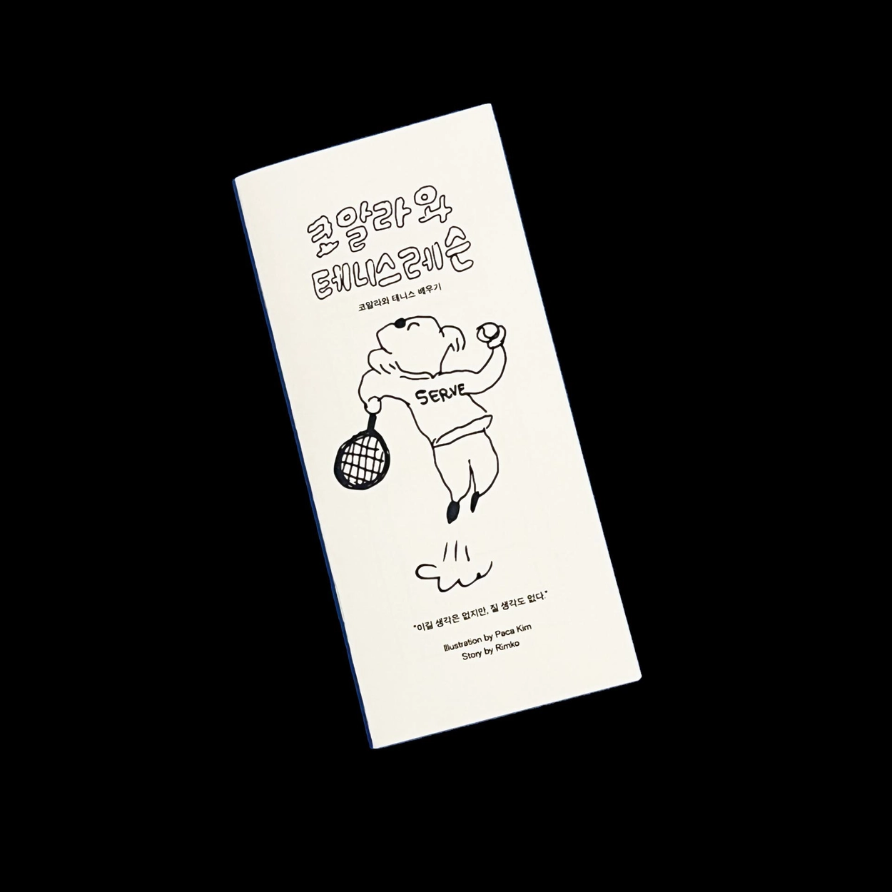
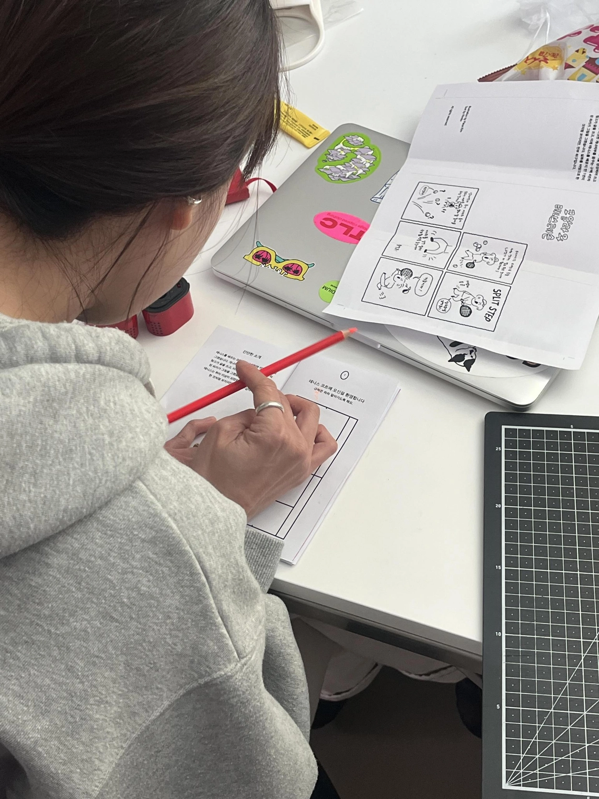
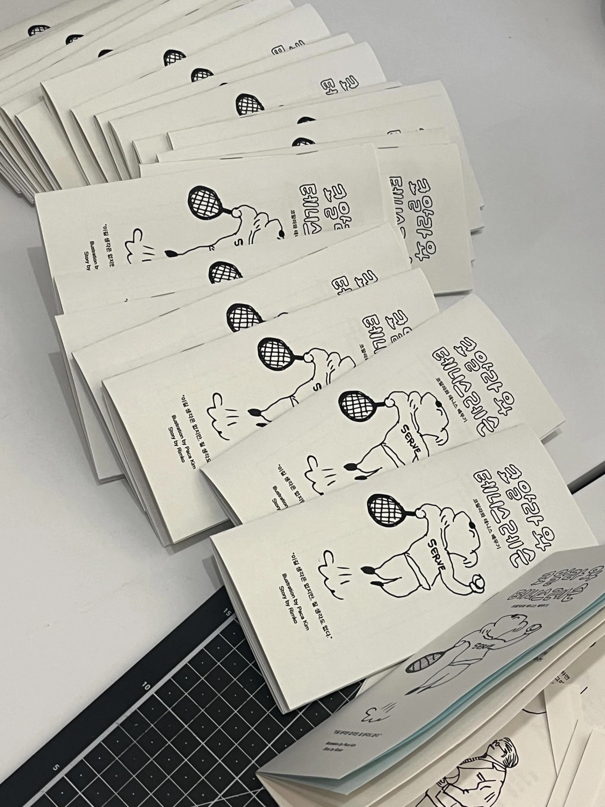
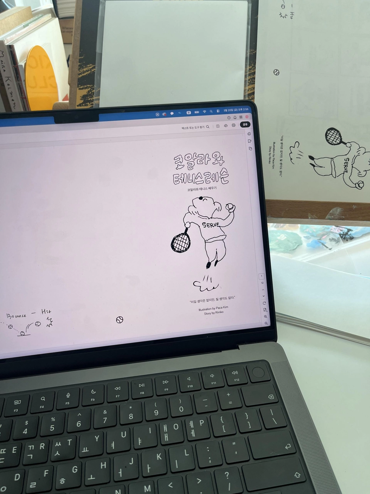
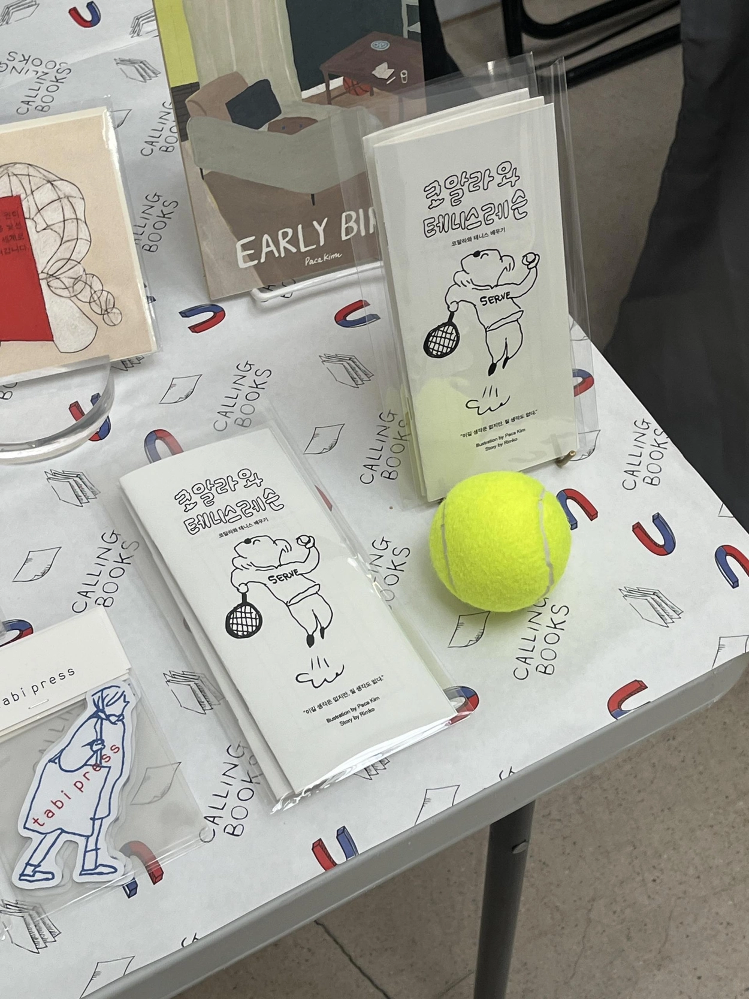
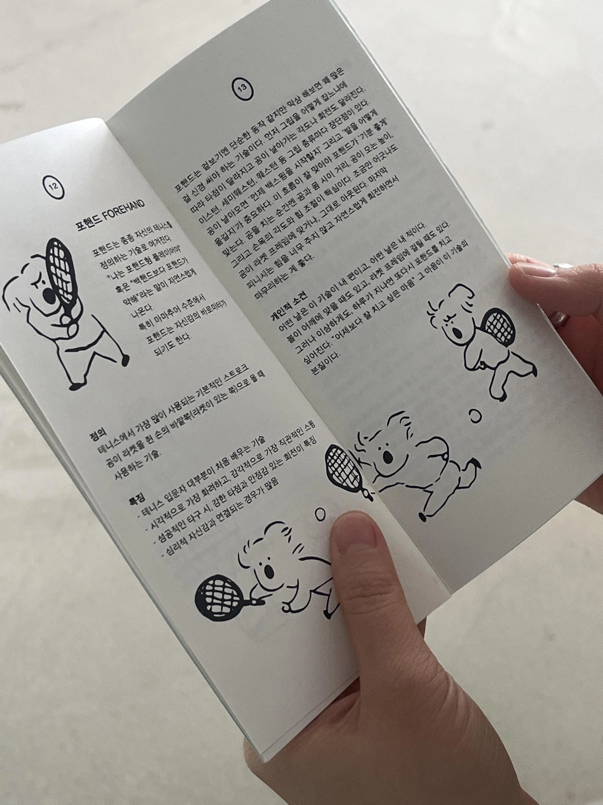
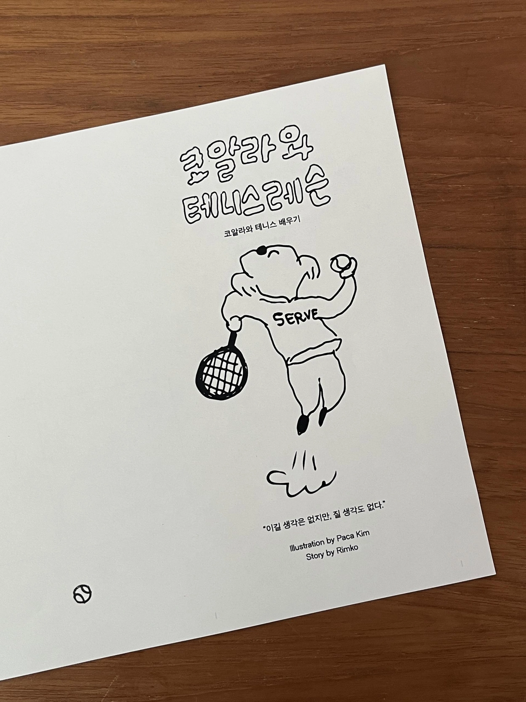
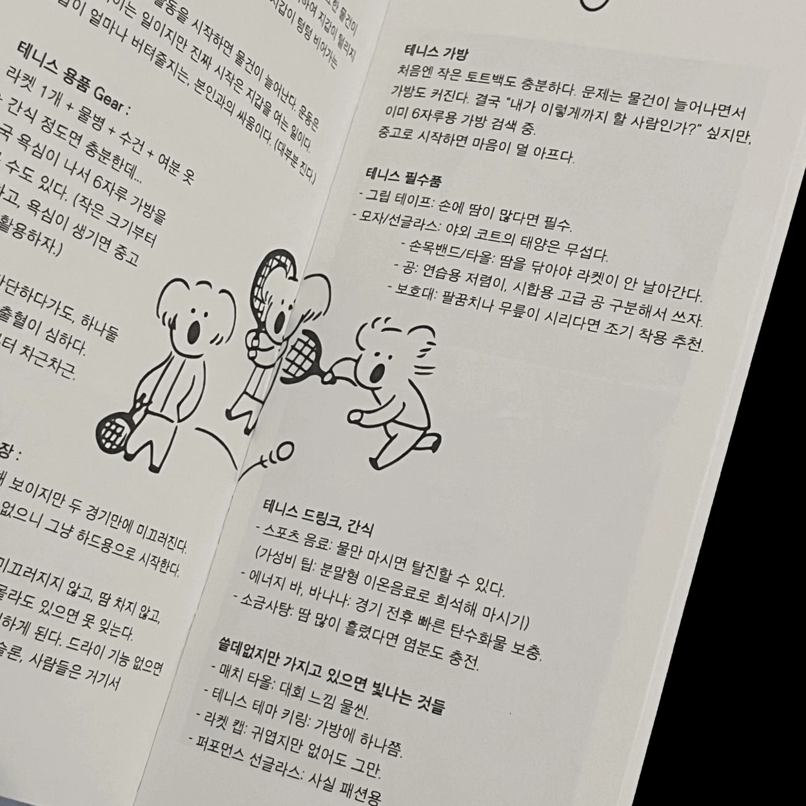
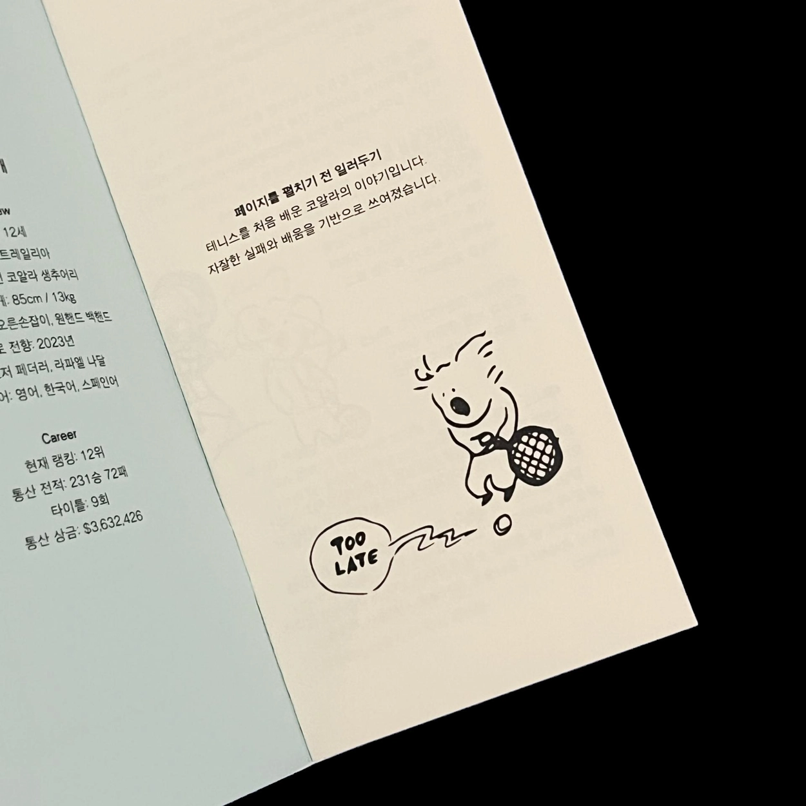
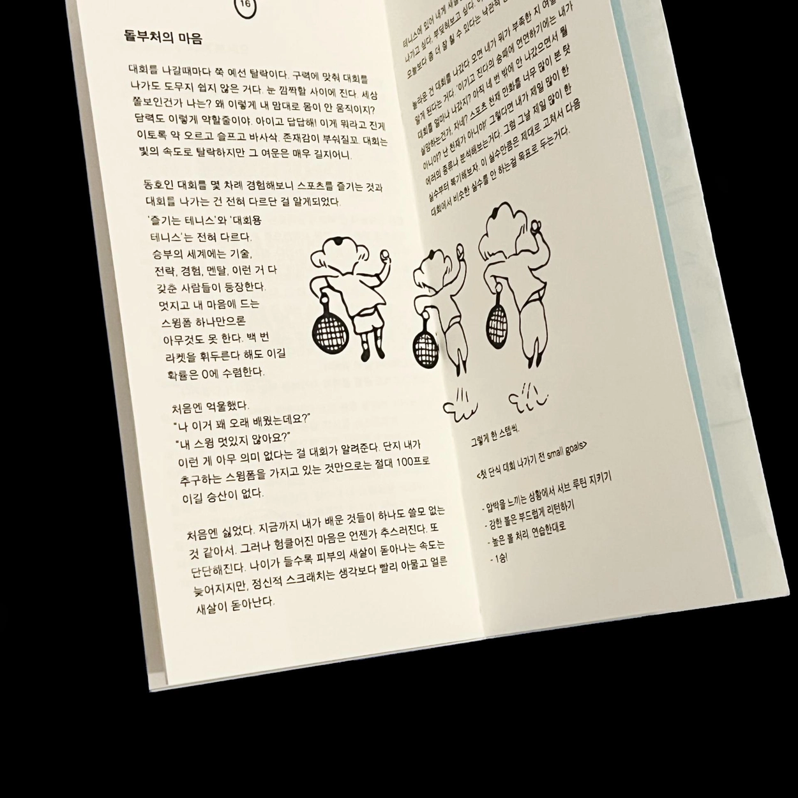
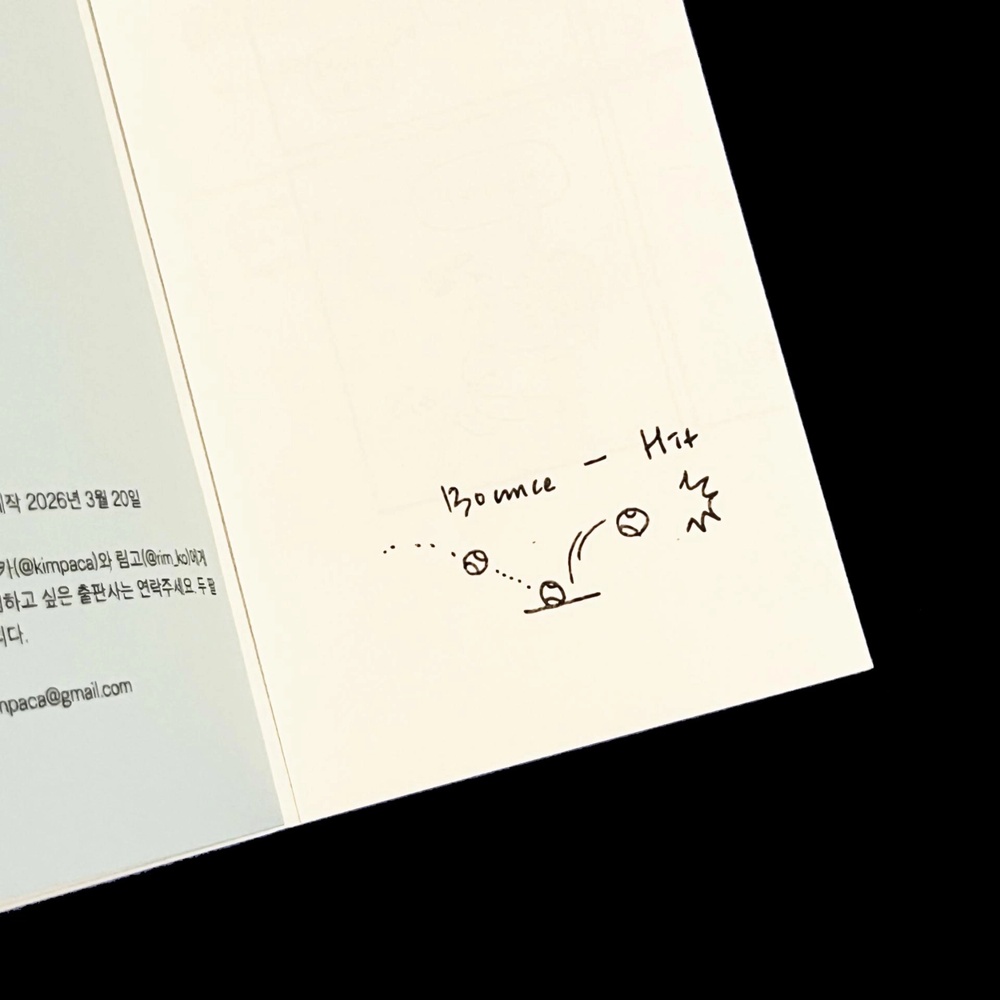
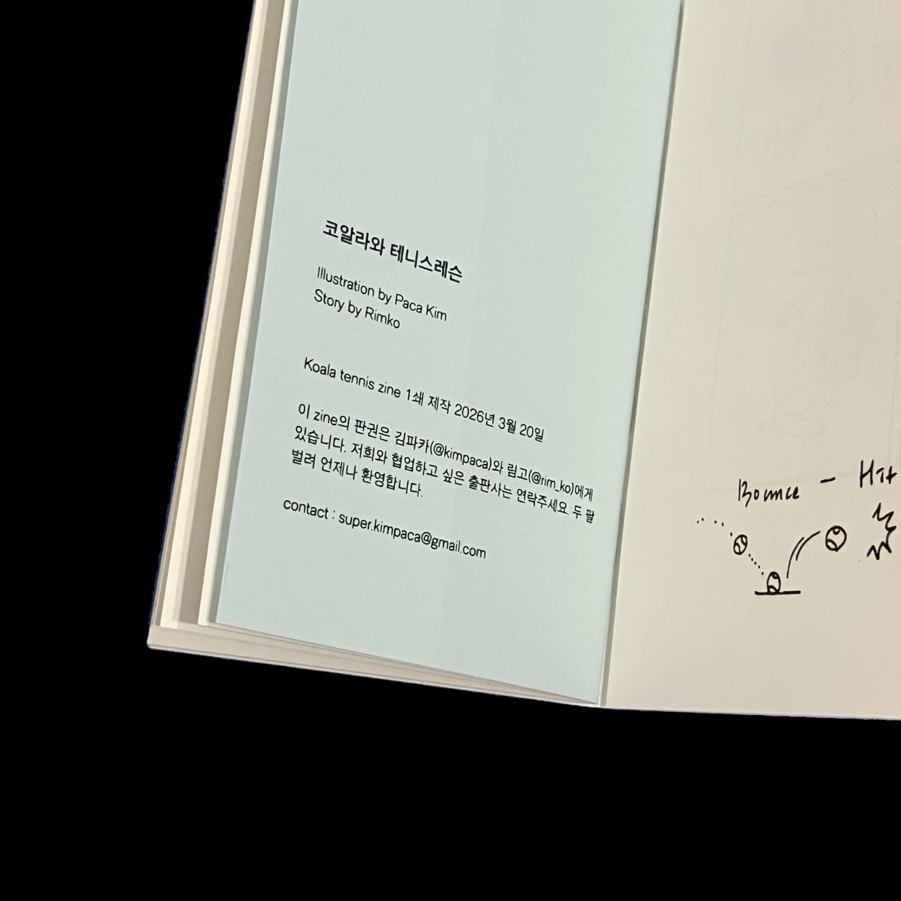
테니스를 배우는 코알라를 상상하며 이야기를 짓고 그렸습니다. 개나리부 입상을 꿈꾸는 구력 3년 차 림고가 글을 쓰고, 이제 테니스를 배운지 만 1년이 된 파카가 그림을 그렸습니다. 어느새 이 둘에게 테니스는 취미 이상이 되었습니다. 실화를 바탕으로 한 것처럼 보이지만, 전부 허구입니다.
코알라의 뇌가 20g이라고 해요. 나이가 들어서 새로운 운동을 배우는 기분이 마치 코알라가 된 듯한 기분이 들었고, 무지 어렵지만 몹시 재밌는 이 운동에 푹 빠져 코알라가 테니스 레슨을 받으며 벌어지는 이야기를 상상하며 쓰고 그렸습니다.
offset seoul에서 첫 공개하였고, 프린트부터 재단, 스템플러로 쾅쾅 제본까지! 100% 손수 만들었습니다.
We imagined a story about a koala learning tennis — and made it into a zine. Rimgo, a three-year player dreaming of winning the Gaenari Division, wrote the story. Paca, exactly one year into learning the sport, drew the pictures. Somewhere along the way, tennis became more than just a hobby for both of us. It looks like it might be based on a true story. It isn't.
A koala's brain weighs just 20 grams. Learning a new sport as an adult felt exactly like being a koala — impossibly hard, but so much fun that we couldn't stop. That feeling is what this zine is made of.
First shown at Offset Seoul. Printed, trimmed, and stapled entirely by hand — 100% handmade.